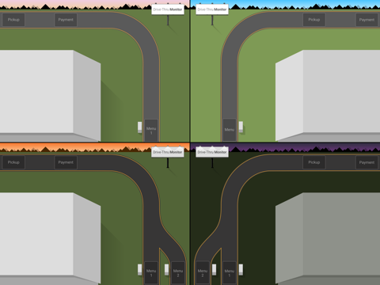
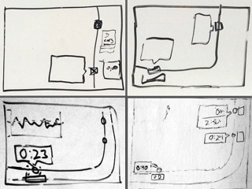

Drive-Thru Monitor is designed to convey the state of a restaurant's drive-thru without
overwhelming users with numerical statistics.
A simple bar graph compares the current average drive-thru service times with a pre-selected goal time, and bubbles attached
to the car graphics convey how long each car has been waiting.

Spatially Mapped to Your Drive-Thru
In lieu of the highly abstract representations (such as a simple list of times)
found in competing solutions, I designed Drive-Thru Monitor using aerial views of actual drive-thrus as a basis.
Always in Motion
Drive-Thru Monitor features video-game inspired visuals, including animated car motion and a real-time day/night cycle.
To illustrate the motion, I created this animated mockup using CSS animation, SVG, and HTML.
Design Evolution

Some initial sketches. We briefly explored the idea of a queue metaphor (top left), but it was
dropped for several reasons, namely that it did not provide room for many cars.
The timing chart underwent several iterations. We decided that this line graph visualization (pictured)
would be too complex for quick viewing.
Once it was determined that the hardware would be mounted directly above the drive-thru window,
we changed the orientation of the virtual road to match.
Want to see it in action?
Drive-Thru Monitor has been deployed by a major restaurant chain at over 6,000 locations throughout the United States,
so look out for it at a restaurant near you!
 The timing chart underwent several iterations. We decided that this line graph visualization (pictured)
would be too complex for quick viewing.
The timing chart underwent several iterations. We decided that this line graph visualization (pictured)
would be too complex for quick viewing.
 Once it was determined that the hardware would be mounted directly above the drive-thru window,
we changed the orientation of the virtual road to match.
Once it was determined that the hardware would be mounted directly above the drive-thru window,
we changed the orientation of the virtual road to match.